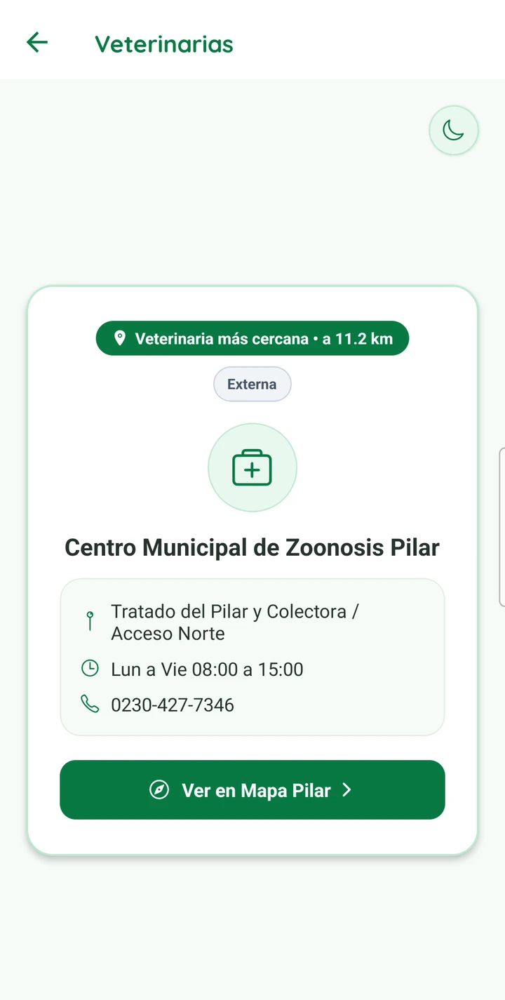
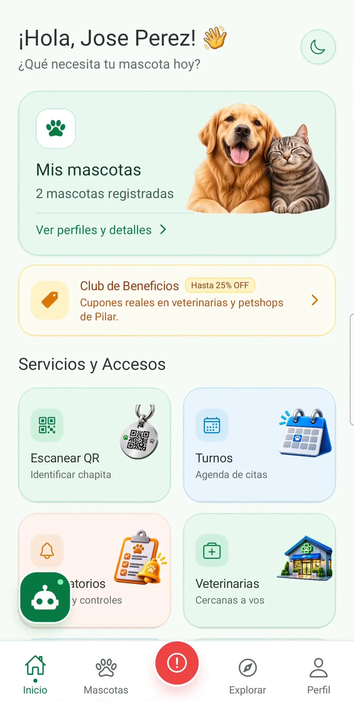
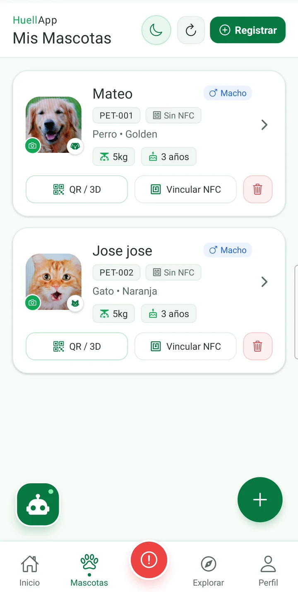
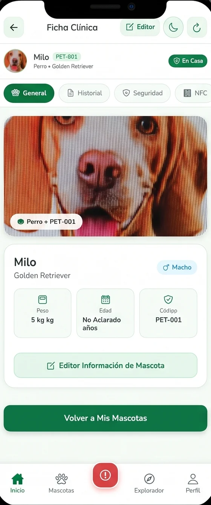
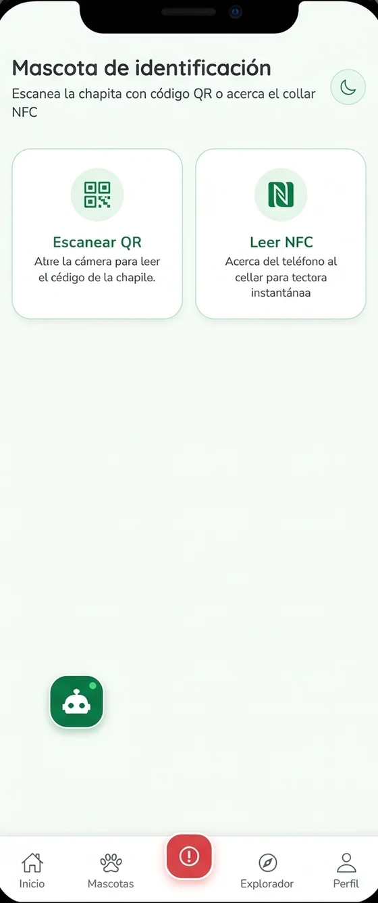
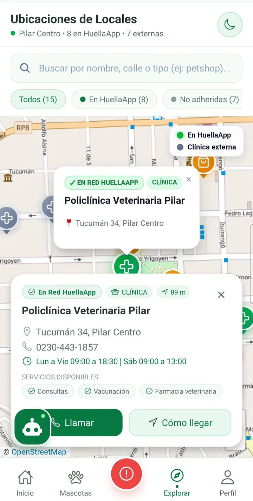

Su ficha, siempre con vos
Historial, vacunas, peso y notas del veterinario. Sin libretas de papel ni fotos perdidas en el celular.
Su ficha clínica, su chapita inteligente y las veterinarias de guardia, todo en tu celular. Y si algún día se pierde, quien la encuentre puede avisarte en segundos.
Perros y gatos con identificación QR y NFC



Elegí una pantalla y recorré la app real, con sus colores, íconos y datos.




Historial, vacunas, peso y notas del veterinario. Sin libretas de papel ni fotos perdidas en el celular.
Registrá a tu mascota, generá su código QR y descargá el modelo 3D listo para imprimir su chapita.
Asociá o desvinculá el collar NFC desde tu perfil de tutor. El veterinario solo escanea para ver su ficha.
Guardias permanentes, estado de extravío y llamada de urgencia con un solo botón siempre visible.
Detecta por GPS la veterinaria más cercana (de HuellApp o externa) en un panel directo y al tocarla hace zoom en el Mapa de Pilar.
La chapita abre una ficha de rescate pensada para actuar rápido. Probalo vos: elegí cómo escanear y mirá qué ve quien la encuentra.
Tocá el botón para simular el escaneo

Hola, soy Milo y me perdí. Por favor, avisale a mi tutor.
Perros y gatos que merecen volver siempre a casa.


Creá tu cuenta y elegí si sos tutor o veterinario.
Cargá su foto, raza, peso y datos de contacto.
Escaneá el QR o leé el chip NFC y listo.
Con la chapita inteligente: tiene un código QR que se escanea con la cámara y, si el collar lo trae, un chip NFC que se lee acercando el celular. Los dos abren la ficha de tu mascota.
Quien la encuentre escanea la chapita y ve la ficha de rescate. Desde ahí puede llamarte, escribirte por WhatsApp y enviarte la ubicación del hallazgo.
El tutor registra a su mascota, gestiona su perfil y vincula o desvincula su chapita NFC/QR (pudiendo eliminar la mascota cuando no tenga un NFC vinculado). El perfil profesional veterinario únicamente escanea el QR o acerca el collar NFC para consultar al instante la información clínica de la mascota.
Al entrar a «Veterinarias, cercanas a vos», la app solicita permiso de ubicación GPS y te muestra un panel directo con la veterinaria más cercana según tu ubicación (sin importar si es de HuellApp o externa). Al tocarlo, te lleva a «Explorar / Mapa Pilar» y hace zoom sobre la clínica.
No. Orienta sobre cuidados y sobre cómo usar la app, pero ante cualquier duda de salud la consulta veterinaria es siempre lo primero.
Los botones de descarga de la sección final se activan cuando la app esté publicada. Mientras tanto podés seguir el proyecto en GitHub.
Descargala y empezá a cuidar a tu mascota de forma conectada.
Las descargas se habilitan pronto.
Ver el proyecto en GitHub